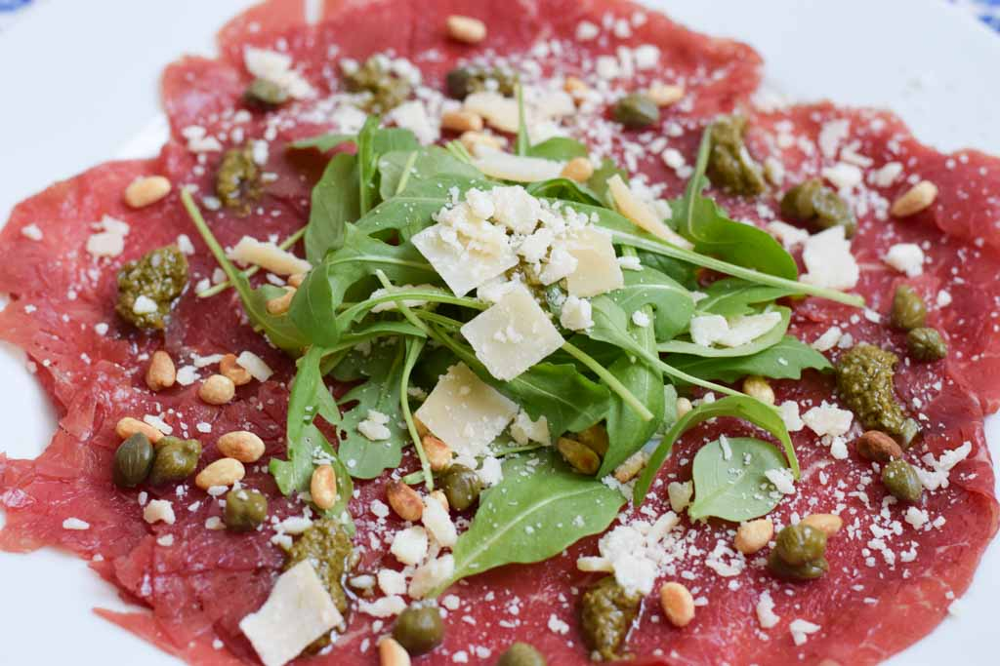

Lekkere Carpaccio een echte italiaanse klassieker.
Ingrediënten
- 250 Gr dun gesneden ossenhaas / carpaccio
- 4 eetlepels grof geraspte Parmezaanse kaas
- 4 eetlepels geroosterde pijnboompitten
- handje rucola
- peper en zout
- Truffelsaus of truffelmayonaise
Bereidingswijze
- Verdeel de carpaccio over 4 borden.
- Verdeel de rucola over de 4 borden.
- Garneer het daarna met wat pijnboompitten en Parmazaanse kaas.
- Bestrooi met wat peper en zout.
- Gooi er als laatste wat truffelsaus over.

Tip Carpaccio is een lekker voorgerecht, vult goed bij als voorgerecht.